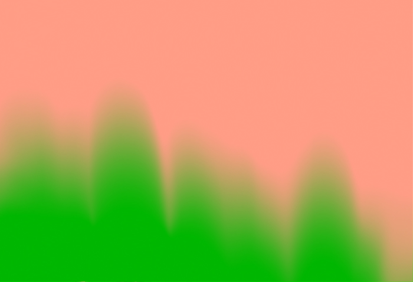

SEC_ – Solo
26.4.2018
Serre dei Giardini Margherita
Bologna
21.00
Il suo strumento principale è il registratore a bobine Revox, che usa per manipolare e deformare i materiali sonori, creando incastri imprevedibili e grotteschi, ricchi di tagli, esplosioni e suoni profondi. Oltrepassando continuamente i confini tra analogico e digitale, strutturato ed improvvisato, narrativo e astratto, SEC_è piuttosto interessato alla relazione tra “fisicità del suono” (e della sua produzione) e qualcosa che potremmo forse ancora chiamare "musicalità".